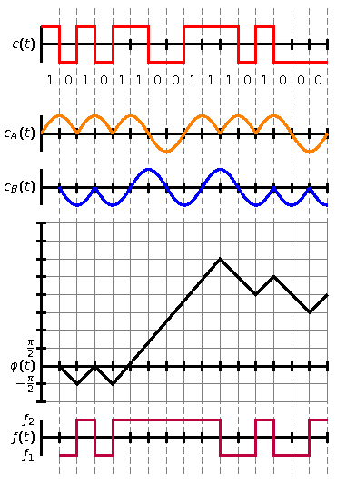

LaTeXDraw
Dieser Artikel wurde für die folgenden Ubuntu-Versionen getestet:
Ubuntu 14.04 Trusty Tahr
Zum Verständnis dieses Artikels sind folgende Seiten hilfreich:
LaTeXDraw  ist ein freier Codegenerator oder PSTricks-Editor für das PSTricks-Paket von LaTeX und steht unter der GNU GPL. LaTeXDraw ist in Java geschrieben, deshalb ist es plattformunabhängig. Es ist in Englisch, Deutsch, Französisch und Spanisch verfügbar. LaTeXDraw stellt eine Umgebung mit verschiedensten Formen bereit, um Grafiken für LaTeX einfach und ohne großes Vorwissen zu erstellen. Ebenso beherrscht es Vektortransformationen der Elemente. Außerdem unterstützt LaTeXDraw den Export in folgende Formate:
ist ein freier Codegenerator oder PSTricks-Editor für das PSTricks-Paket von LaTeX und steht unter der GNU GPL. LaTeXDraw ist in Java geschrieben, deshalb ist es plattformunabhängig. Es ist in Englisch, Deutsch, Französisch und Spanisch verfügbar. LaTeXDraw stellt eine Umgebung mit verschiedensten Formen bereit, um Grafiken für LaTeX einfach und ohne großes Vorwissen zu erstellen. Ebenso beherrscht es Vektortransformationen der Elemente. Außerdem unterstützt LaTeXDraw den Export in folgende Formate:
PSTricks
eps
jpg
bmp
png
ppm
Voraussetzungen¶
Um LaTeXDraw benutzen zu können, muss eine Java-Laufzeitumgebung (JRE) in der Version 6 (für die Version aus den offiziellen Paketquellen) oder 7 (für die Version 3 oder neuer) installiert sein.
Installation¶
PSTricks¶
Da LaTeXDraw mit dem PSTricks-Paket von TeX Live arbeitet, muss dieses installiert werden, um die Grafiken später mit LaTeX kompilieren zu können. PSTricks ist im Paket
texlive-pstricks
 mit apturl
mit apturl
Paketliste zum Kopieren:
sudo apt-get install texlive-pstricks
sudo aptitude install texlive-pstricks
enthalten. Es empfiehlt sich, auch noch das Paket
texlive-latex-extra
mit apturl
Paketliste zum Kopieren:
sudo apt-get install texlive-latex-extra
sudo aptitude install texlive-latex-extra
zu installieren. Es sei jedoch darauf hingewiesen, dass mit diesem Paket mehrere hundert MiB installiert werden, da hierin sämtliche Sprachen für LaTeX enthalten sind.
LaTeXDraw¶
Anschließend lässt sich LaTeXDraw aus der Paketverwaltung heraus installieren. Bis einschließlich Ubuntu 14.04 erhält man die ältere Version 2.0.8:
latexdraw (universe)
mit apturl
Paketliste zum Kopieren:
sudo apt-get install latexdraw
sudo aptitude install latexdraw
Manuell¶
Die aktuelle Version von LaTeXDraw kann auch manuell heruntergeladen  und installiert werden. Benötigt wird die Datei LaTeXDraw-x.y.z_bin.zip (bei älteren Versionen LaTeXDraw-x.y.z.zip) in der gewünschten Version. Bitte daran denken, dass ab Version 3 Java 7 benötigt wird.
und installiert werden. Benötigt wird die Datei LaTeXDraw-x.y.z_bin.zip (bei älteren Versionen LaTeXDraw-x.y.z.zip) in der gewünschten Version. Bitte daran denken, dass ab Version 3 Java 7 benötigt wird.
Hinweis!
Fremdsoftware kann das System gefährden.
Nach dem Herunterladen entpackt [4] man die Archivdatei und wechselt in den entstandenen Ordner. Da die Installation von LaTeXDraw Root-Rechte benötigt, öffnet man den Installationsdialog mit:
sudo java -jar installer.jar
und installiert die Anwendung.
Benutzung¶
Allgemeines¶
LaTeXDraw lässt sich über den Befehl
latexdraw
starten. Nun kann man zuerst einmal in den "Einstellungen" das Programm auf Deutsch umstellen. Wie im Menü "Datei" auffällt, handelt es sich bei LaTeXDraw nicht um einen reinen Codegenerator für LaTeX. Es bietet neben direktem "Drucken" der Zeichnung auch noch die "Konvertierung" von Bildern in andere Formate an, was im täglichen Gebrauch mit LaTeX häufiger vorkommt.
Zeichnen¶
 Zeichnen kann man in LaTeXDraw, indem man die gewünschte Form auswählt und diese bei gedrückter linker Maustaste auf der Zeichenfläche in die gewünschte Größe zieht. Will man eine Figur auswählen, so muss man zuerst das "Auswahlwerkzeug" aktivieren. Auf diese Weise kann man die Figuren verschieben und mit einem Druck auf die rechte Maustaste deren Anordnung oder deren Eigenschaften bearbeiten.
Die einfache Handhabung der Eigenschaften der einzelnen PSTricks-Elemente erleichtert Anfängern, sowie auch manchen fortgeschrittenen Benutzern die Handhabung mit Grafiken unter LaTeX und ersparen oft einen Besuch im Internet, da der Code für die Elemente direkt neben der Zeichenfläche angezeigt wird.
Hat man eine Zeichnung fertiggestellt, so kann man über die Codeanzeige den gesamten Quelltext oder nur eine Auswahl in die Zwischenablage schreiben, um sie wieder in einem LaTeX-Editor aufzurufen. Hat man schon eine Zeichnung im LaTeX-Quellcode begonnen und will sie in LaTeXDraw weiterbearbeiten, so kann man auch den Code in LaTeXDraw einfügen.
Hinweise zu PSTricks¶
LaTeXDraw behandelt nur einen minimalen Teil des gesamten PSTricks-Pakets. Dieses bietet weit mehr Gestaltungsmöglichkeiten, erfordert aber ein bisschen Einarbeitung.
So lassen sich mit ein bisschen Übung von Schaltkreisen über 3D-Effekte , sowie 3D-Darstellungen oder mathematischen Plots bis hin zu PDF-Animationen mithilfe von LaTeX so ziemlich alle Aufgaben erledigen, die im Textsatz anfallen können. Die Palette von PSTricks ist fast unerschöpflich, Beispiele findet man auf tug.org , oder man sucht direkt in den Paketen nach den passenden Bibliotheken. Rechts ein Beispiel zu einer mit PSTricks und LaTeXDraw erstellten Zeichnung (CPFSK-Verfahren).
Beispiel¶
An dem LaTeX-Code zur dargestellten Grafik lassen sich die einzelnen Elemente des Bildes leicht nachvollziehen. Die Begriffe sind meist selbsterklärend und können bei Bedarf auch schnell nachgeschlagen werden. Der Code muss in LaTeX in die pspicture-Umgebung geladen werden, damit der Compiler weiß, dass er an dieser Stelle eine Grafik übersetzten soll.
\begin{pspicture}(0,1)(8,14)
\psline[linewidth=1pt,linecolor=gray,linestyle=dashed](1,1)(1,14)
\psline[linewidth=1pt,linecolor=gray,linestyle=dashed](2,1)(2,14)
\psline[linewidth=1pt,linecolor=gray,linestyle=dashed](3,1)(3,14)
\psline[linewidth=1pt,linecolor=gray,linestyle=dashed](4,1)(4,14)
\psline[linewidth=1pt,linecolor=gray,linestyle=dashed](5,1)(5,14)
\psline[linewidth=1pt,linecolor=gray,linestyle=dashed](6,1)(6,14)
\psline[linewidth=1pt,linecolor=gray,linestyle=dashed](7,1)(7,14)
\psline[linewidth=1pt,linecolor=gray,linestyle=dashed](8,1)(8,14)
\psline[linewidth=1pt,linecolor=gray,linestyle=dashed](1.5,1)(1.5,14)
\psline[linewidth=1pt,linecolor=gray,linestyle=dashed](2.5,1)(2.5,14)
\psline[linewidth=1pt,linecolor=gray,linestyle=dashed](3.5,1)(3.5,14)
\psline[linewidth=1pt,linecolor=gray,linestyle=dashed](4.5,1)(4.5,14)
\psline[linewidth=1pt,linecolor=gray,linestyle=dashed](5.5,1)(5.5,14)
\psline[linewidth=1pt,linecolor=gray,linestyle=dashed](6.5,1)(6.5,14)
\psline[linewidth=1pt,linecolor=gray,linestyle=dashed](7.5,1)(7.5,14)
\psline[linewidth=1pt,linecolor=gray,linestyle=dashed](.5,1)(.5,14)
%
\psaxes[linewidth=2pt,labels=none,ticks=x,dx=0.5cm,dy=0.5cm](0,13)(0,12.5)(8,13.5)
\psline[linewidth=2pt,linecolor=red](0,13.5)(.5,13.5)(.5,12.5)(1,12.5)(1,13.5)(1.5,13.5)(1.5,12.5)%
(2,12.5)(2,13.5)(3,13.5)(3,12.5)(4,12.5)(4,13.5)(5.5,13.5)(5.5,12.5)(6,12.5)(6,13.5)(6.5,13.5)(6.5,12.5)(8,12.5)
%
\rput(.25,12){1}\rput(.75,12){0}\rput(1.25,12){1}\rput(1.75,12){0}
\rput(2.25,12){1}\rput(2.75,12){1}\rput(3.25,12){0}\rput(3.75,12){0}
\rput(4.25,12){1}\rput(4.75,12){1}\rput(5.25,12){1}\rput(5.75,12){0}
\rput(6.25,12){1}\rput(6.75,12){0}\rput(7.25,12){0}\rput(7.75,12){0}
%
\psaxes[linewidth=2pt,labels=none,ticks=x,dx=0.5cm,dy=0.5cm](0,10.5)(0,10)(8,11)
\psplot[plotpoints=3000,linewidth=2pt,linecolor=orange]{0}{1}{10.5 .5 x 180 mul sin neg mul sub}
\psplot[plotpoints=3000,linewidth=2pt,linecolor=orange]{1}{2}{10.5 .5 x 180 mul sin mul sub}
\psplot[plotpoints=3000,linewidth=2pt,linecolor=orange]{2}{4}{10.5 .5 x 180 mul sin neg mul sub}
\psplot[plotpoints=3000,linewidth=2pt,linecolor=orange]{4}{5}{10.5 .5 x 180 mul sin neg mul sub}
\psplot[plotpoints=3000,linewidth=2pt,linecolor=orange]{5}{6}{10.5 .5 x 180 mul sin mul sub}
\psplot[plotpoints=3000,linewidth=2pt,linecolor=orange]{6}{8}{10.5 .5 x 180 mul sin neg mul sub}
%
\psaxes[linewidth=2pt,labels=none,ticks=x,dx=0.5cm,dy=0.5cm](0,9)(0,8.5)(8,9.5)
\psplot[plotpoints=3000,linewidth=2pt,linecolor=blue]{.5}{1.5}{9 .5 x 180 mul cos neg mul sub}
\psplot[plotpoints=3000,linewidth=2pt,linecolor=blue]{1.5}{5.5}{9 .5 x 180 mul cos mul sub}
\psplot[plotpoints=3000,linewidth=2pt,linecolor=blue]{5.5}{6.5}{9 .5 x 180 mul cos mul sub}
\psplot[plotpoints=3000,linewidth=2pt,linecolor=blue]{6.5}{7.5}{9 .5 x 180 mul cos neg mul sub}
\psplot[plotpoints=3000,linewidth=2pt,linecolor=blue]{7.5}{8}{9 .5 x 180 mul cos mul sub}
%
\psgrid[gridwidth=1pt,subgridwidth=0,gridlabels=0.0pt,subgriddiv=1,unit=.5cm,gridcolor=gray](0,4)(0,6)(16,16)
\psaxes[linewidth=2pt,labels=none,dx=0.5cm,dy=0.5cm](0,4)(0,3)(8,8)
\psline[linewidth=2pt,linecolor=black](.5,4)(1,3.5)(1.5,4)(2,3.5)(5,7)(6,6)(6.5,6.5)(7.5,5.5)(8,6)
%
\psaxes[linewidth=2pt,labels=none,ticks=x,dx=0.5cm,dy=0.5cm](0,2)(0,1.5)(8,2.5)
\psline[linewidth=2pt, linecolor=purple](.5,1.5)(1,1.5)(1,2.5)(1.5,2.5)(1.5,1.5)(2,1.5)(2,2.5)(5,2.5)%
(5,1.5)(6,1.5)(6,2.5)(6.5,2.5)(6.5,1.5)(7.5,1.5)(7.5,2.5)(8,2.5)
%
\uput[180](0,13){$c(t)$}\uput[180](0,10.5){$c_A(t)$}\uput[180](0,9){$c_B(t)$}
\uput[180](0,4){$\varphi(t)$}\uput[180](0,4.5){$\pi\over2$}\uput[180](0,3.5){$-{\pi\over2}$}
\uput[180](0,2){$f(t)$}\uput[180](0,2.5){$f_2$}\uput[180](0,1.5){$f_1$}
\end{pspicture}Die Ausgabe kann entweder in Postscript oder PDF (mit dem Paket pst-pdf) geschehen, wobei letztere bei manchen Paketen von PSTricks Probleme haben kann. Man kann als Lösung hierzu ein Postscript erstellen lassen und dieses mit dem Befehl
ps2pdf datei.ps
in PDF konvertieren.
Links¶
PSTricks Webpräsenz
- mit vielen Beispielen und DokumentationenZaubererei mit PSTricks - Teil 3: Objekte in 3-D
 - freiesMagazin.de, 01/2008
- freiesMagazin.de, 01/2008Zaubererei mit PSTricks - Teil 2: Achsen, Graphen und Plots
- freiesMagazin.de, 12/2007Zaubererei mit PSTricks - Teil 1: Linien, Kreise und Kurven
- freiesMagazin.de, 11/2007LaTeX
 Übersichtsartikel
Übersichtsartikel
- Erstellt mit Inyoka
-
 2004 – 2017 ubuntuusers.de • Einige Rechte vorbehalten
2004 – 2017 ubuntuusers.de • Einige Rechte vorbehalten
Lizenz • Kontakt • Datenschutz • Impressum • Serverstatus -
Serverhousing gespendet von